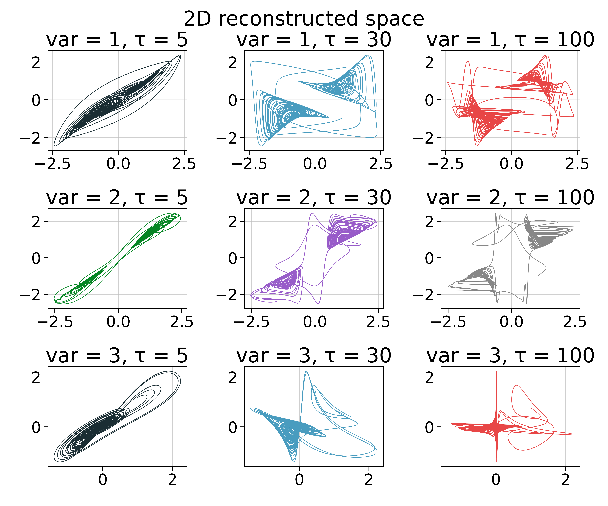

Delay Coordinates Embedding
A timeseries recorded in some manner from a dynamical system can be used to gain information about the dynamics of the entire state space of the system. This can be done by constructing a new state space from the timeseries. One method that can do this is what is known as delay coordinates embedding or delay coordinates reconstruction.
Timeseries embedding
Delay embeddings are done through embed:
DelayEmbeddings.embed — Functionembed(s, d, τ [, h])Embed s using delay coordinates with embedding dimension d and delay time τ and return the result as a Dataset. Optionally use weight h, see below.
Here τ > 0, use genembed for a generalized version.
Description
If τ is an integer, then the $n$-th entry of the embedded space is
\[(s(n), s(n+\tau), s(n+2\tau), \dots, s(n+(d-1)\tau))\]
If instead τ is a vector of integers, so that length(τ) == d-1, then the $n$-th entry is
\[(s(n), s(n+\tau[1]), s(n+\tau[2]), \dots, s(n+\tau[d-1]))\]
The resulting set can have same invariant quantities (like e.g. lyapunov exponents) with the original system that the timeseries were recorded from, for proper d and τ. This is known as the Takens embedding theorem [Takens1981][Sauer1991]. The case of different delay times allows embedding systems with many time scales, see[Judd1998].
If provided, h can be weights to multiply the entries of the embedded space. If h isa Real then the embedding is
\[(s(n), h \cdot s(n+\tau), w^2 \cdot s(n+2\tau), \dots,w^{d-1} \cdot s(n+γ\tau))\]
Otherwise h can be a vector of length d-1, which the decides the weights of each entry directly.
References
[Takens1981] : F. Takens, Detecting Strange Attractors in Turbulence — Dynamical Systems and Turbulence, Lecture Notes in Mathematics 366, Springer (1981)
[Sauer1991] : T. Sauer et al., J. Stat. Phys. 65, pp 579 (1991)
Here are some examples of embedding a 3D continuous chaotic system:
using DynamicalSystems, PyPlot
ds = Systems.gissinger(ones(3))
data = trajectory(ds, 1000.0, dt = 0.05)
xyz = columns(data)
figure(figsize = (12,10))
k = 1
for i in 1:3
for τ in [5, 30, 100]
R = embed(xyz[i], 2, τ)
ax = subplot(3,3,k)
plot(R[:, 1], R[:, 2], color = "C$(k-1)", lw = 0.8)
title("var = $i, τ = $τ")
global k+=1
end
end
tight_layout()
suptitle("2D reconstructed space")
subplots_adjust(top=0.9)
Keep in mind that whether a value of τ is "reasonable" for continuous systems depends on dt. In the above example the value τ=30 is good, only for the case of using dt = 0.05. For shorter/longer dt one has to adjust properly τ so that their product τ*dt is the same.
Embedding Functors
The high level function embed utilize a low-level interface for creating embedded vectors on-the-fly. The high level interface simply loops over the low level interface. The low level interface is composed of the following two structures:
DelayEmbeddings.DelayEmbedding — TypeDelayEmbedding(γ, τ, h = nothing) → `embedding`Return a delay coordinates embedding structure to be used as a function-like-object, given a timeseries and some index. Calling
embedding(s, n)will create the n-th delay vector of the embedded space, which has γ temporal neighbors with delay(s) τ. γ is the embedding dimension minus 1, τ is the delay time(s) while h are extra weights, as in embed for more.
Be very careful when choosing n, because @inbounds is used internally. Use τrange!
DelayEmbeddings.τrange — Functionτrange(s, de::AbstractEmbedding)Return the range r of valid indices n to create delay vectors out of s using de.
Generalized embeddings
DelayEmbeddings.genembed — Functiongenembed(s, τs, js = ones(...); ws = nothing) → datasetCreate a generalized embedding of s which can be a timeseries or arbitrary Dataset, and return the result as a new Dataset.
The generalized embedding works as follows:
τsdenotes what delay times will be used for each of the entries of the delay vector. It is recommended thatτs[1] = 0.τsis allowed to have negative entries as well.jsdenotes which of the timeseries contained inswill be used for the entries of the delay vector.jscan contain duplicate indices.wsare optional weights that weight each embedded entry (the i-th entry of the delay vector is weighted byws[i]). If provided, it is recommended thatws[1] = 1
τs, js, ws are tuples (or vectors) of length D, which also coincides with the embedding dimension. For example, imagine input trajectory $s = [x, y, z]$ where $x, y, z$ are timeseries (the columns of the Dataset). If js = (1, 3, 2) and τs = (0, 2, -7) the created delay vector at each step $n$ will be
\[(x(n), z(n+2), y(n-7))\]
Using ws = (1, 0.5, 0.25) as well would create
\[(x(n), \frac{1}{2} z(n+2), \frac{1}{4} y(n-7))\]
js can be skipped, defaulting to index 1 (first timeseries) for all delay entries, while it has no effect if s is a timeseries instead of a Dataset.
See also embed. Internally uses GeneralizedEmbedding.
DelayEmbeddings.GeneralizedEmbedding — TypeGeneralizedEmbedding(τs, js = ones(length(τs)), ws = nothing) -> `embedding`Return a delay coordinates embedding structure to be used as a functor. Given a timeseries or trajectory (i.e. Dataset) s and calling
embedding(s, n)will create the delay vector of the n-th point of s in the embedded space using generalized embedding (see genembed).
js is ignored for timeseries input s (since all entries of js must be 1 in this case) and in addition js defaults to (1, ..., 1) for all τ.
Be very careful when choosing n, because @inbounds is used internally. Use τrange!
- Judd1998K. Judd & A. Mees, Physica D 120, pp 273 (1998)
- Farmer1988Farmer & Sidorowich, Exploiting Chaos to Predict the Future and Reduce Noise"